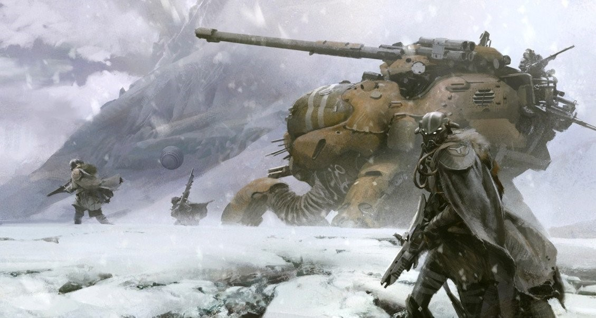
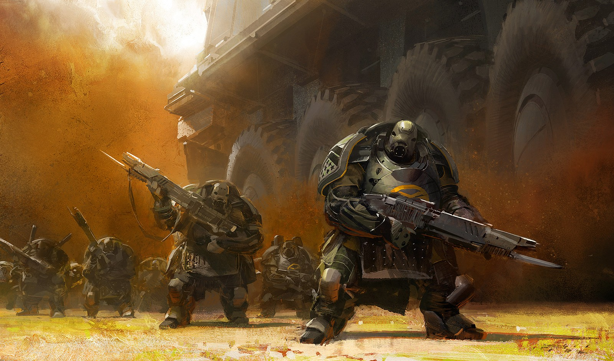
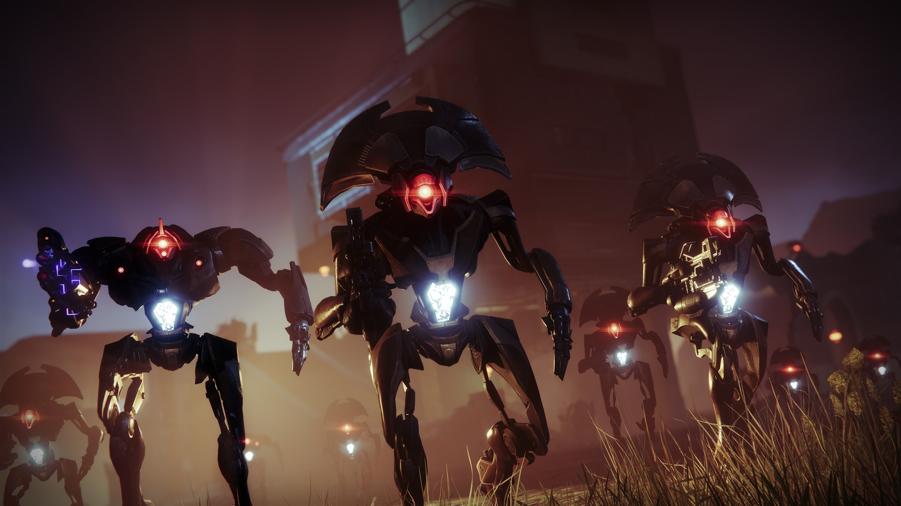
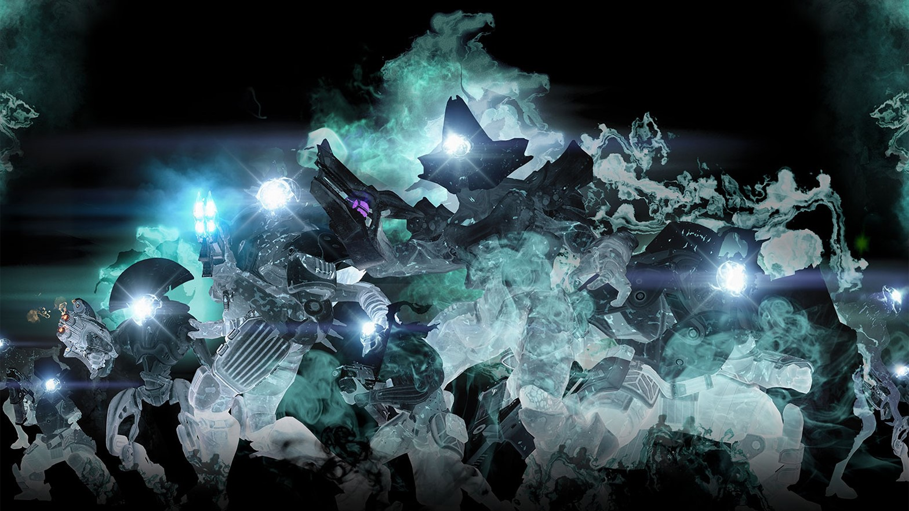

What is the Lore of Destiny 2?
Destiny 2 is a popular online multiplayer first-person shooter game developed by Bungie. Destiny and Destiny 2 have been in live service for over 10 years, and in that time have told many fascinating and wonderful stories. The Lore of the World of Destiny is incredibly deep and rich, but in generl it follows the story of you, The Main Charater, battling and defeating the devious destructive foes of Humanity.
Ever since an Entity know as the Traveler was discovered on the plains of Mars, Humaninty has been engaged in a Solar System Wide Golden Age. New developements in Medicince, Weaponry, and Space Exploration have made Humans capable of dominating the entire solar system. The Traveler even traveled from each planet of the Solar System teraforming them into liviable planets. For thousands of years Humanity thrived, until fleets of black ships resembling pyrimids began an all out attack on the basins of human civilization. Hoards of beasts and destructive alien life forms quickly anhilated nearly all of Humanity in what became know as the Collapse. Only small pockets of civilzation survied, the traveler was injured in the attack, but in an attempt to defend itself it let out a floory of mechanical droids called "Ghosts" to travel the Solar System to find "Guardians" With the Power of the Light the Ghosts ressurected guardians across the Solar System to defend against the Hordes of the Darkness.
With help from the Guardians humanity slowy began to regain its footing establishing the last bastion of Humanity known as the Last City. For a full summary of the Lore of Destiny 2, I have embedded this Youtube video from My Name is Byf to explain:
Enemey Factions
As you can see there are many different factions and charaters within the Lore of Destiny 2, I would like to take the time to help you better understand the different races of aliens present.
- The Hive
- By far the most consistent threat to Humanity have been the Hive, The Hive are Bug like Aliens that have parasites with in them called "Worms" which require them to kill and feed on blood. The Hive were gifted these Worms by the Worm God's which are gigantic terifying monsters that serve the Darkness. Outside of giving the Hive a never ending bloodlust, the Worms also make the Hive stronger and mor resilent.
Because of their constant bloodshed, the Hive have build their religon off of what they call the "Sword Logic" which is pretty much Social Darwinisn, the Strong kill the Weak.

- The Fallen
- The Fallen were once graced by the Traveller, and experienced their own Golden Age. However when the forces of the Darkness discovered them, the Traveler quickly fled leaving the Fallen to die to the ensuing collapse of their civilization. Despite this, most of the Fallen still worship the Travel and want to enter its presence again. Unfortunately because the traveler had chosen Humanity the Fallen became Jealous and began to wage war on the people of Earth. The fallen were the first alien invaders that Humanity encountered post collapse, and remained a consistent threat for thousands of years, until a Fallen Prophet rose amongst their ranks and made peace with Humanity. Some of the Fallen ranks were corrupted by a Dark Ether which zombifed them into what is now know as the Scorn.

- The Cabal
- The Cabal are a massive empire of aliens that have been conquering and enslaving planets for thousands of years. The Cabal are a very militaristic society, and have a very strict caste system. The Cabal are also known for their massive war machines and their ability to terraform planets. The Cabal were the first aliens to discover the Traveler, and they have been trying to capture the power it possses ever since. At one point a Cabal fleet under the command of General Dominus Ghaul launched a suprise invasion of the Last city and succeded in capturing the City and the Traveler. They executed many of earths warriors until a resistence gathered enough power to slay Ghaul before he was able to harness the Travelers power to become imortal.

- The Vex
- The Vex are a race of ancient, time-traveling cybernetic machines. Their origins are shrouded in mystery, but they are known to manipulate reality and time itself to achieve their goals. The Vex construct vast, labyrinthine structures called "Vex Networks" and are capable of simulating entire realities. They are relentless in their pursuit of order and seek to convert all life and matter into their own image. The Vex are one of the most enigmatic and dangerous foes in the Destiny universe, often appearing wherever reality is at risk of being rewritten. The Vex were first unearthed on the frosty glaciers of the moon Europa by the Golden Age Scientist Clovis Bray, It is believed that it was the Vexs Discovery that led to the Darkness becoming aware of the Travelers location which caused the colapse.

- The Taken
- The Taken are a mysterious and terrifying creatures that have been corrupted by the Darkness. They were created by the Taken King, Oryx, who uses his power to transform other beings into his minions. The Taken are known for their ability to manipulate reality and their ability to phase in and out of existence. They are often used as shock troops by the Hive and are feared by all who encounter them. The Taken are a constant threat to the Last City and have been responsible for many of its greatest tragedies.

Destiny 2 Statistics
Guardians have accomplished alot since their revial, to illustrate their success, here is a Tableau VIZ showcasing every Guardians current Kill Count.